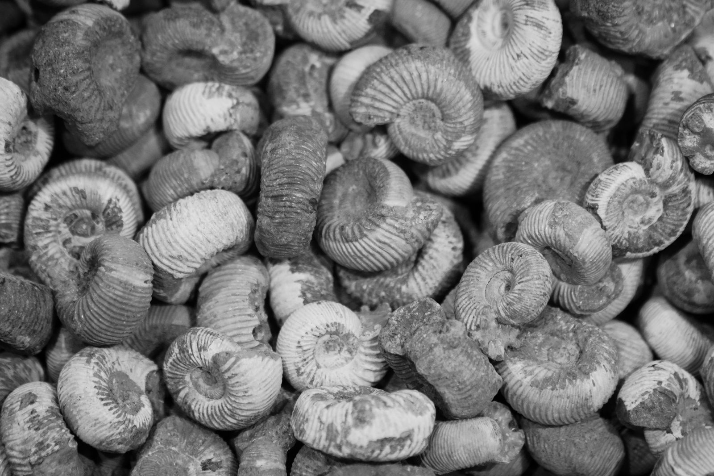

Enquiries
Photographs first. Tell me what it is, what rock it sits in, and how big — the bench answers every enquiry personally.
This form is a demonstration form: it is part of a fictional portfolio, it transmits nothing and stores nothing. In the real practice the same details go by email — which is printed beside the form, because a form should never be the only door.
Enquiry logged — in the demonstration, at least.
Your reference: FS-2026-000
Enquiry type: —. In the real practice, the next step is photographs by email, then — if the specimen needs the bench — the £120 assessment, credited against the work.
Nothing was transmitted: this portfolio is fictional and the form is a demonstration. The email address beside the form is the persona's, and it is a reserved .example address.
Or write directly
eleanor@vancepreparation.example
The persona is fictional, so the address is a reserved .example one — in the real practice this is where the photographs land. Either route reaches the same bench.
What to send
- Photographs — the specimen in daylight, a coin or ruler for scale, both faces if it is a split slab.
- The rock — what it looks like and how hard it feels: shale that splits, limestone that rings, sandstone that grits.
- The size — longest dimension in centimetres. The estimator on the home page turns this into a first number.
- Where it was found — the locality as precisely as you honestly can; it is half the specimen's science. Exact localities of vulnerable sites are recorded in the log, never published.
- Permission — whose land it came from, and whether the landowner's consent is in hand. No permission, no work — that one is not negotiable.
